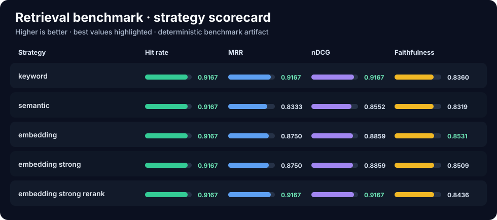

rag-eval-lab Benchmark Report
Generated from results/retrieval-backend-comparison.json and per-strategy run artifacts.

Strategy Summary
| Strategy | Hit Rate | MRR | nDCG | Faithfulness |
|---|---|---|---|---|
keyword |
0.9167 | 0.9167 | 0.9167 | 0.8360 |
semantic |
0.9167 | 0.8333 | 0.8552 | 0.8319 |
embedding |
0.9167 | 0.8750 | 0.8859 | 0.8531 |
embedding_strong |
0.9167 | 0.8750 | 0.8859 | 0.8509 |
embedding_strong_rerank |
0.9167 | 0.9167 | 0.9167 | 0.8436 |
Deltas vs Keyword Baseline
| Strategy | Hit Rate | MRR | nDCG | Faithfulness |
|---|---|---|---|---|
semantic |
0.0000 | -0.0833 | -0.0615 | -0.0042 |
embedding |
0.0000 | -0.0417 | -0.0308 | +0.0171 |
embedding_strong |
0.0000 | -0.0417 | -0.0308 | +0.0149 |
embedding_strong_rerank |
0.0000 | 0.0000 | 0.0000 | +0.0076 |
Key Findings
Lexical baseline:
keyword remains hard to beat on rank-sensitive retrieval metrics.Dense retrieval: Embedding-only strategies improve faithfulness slightly but trail the lexical baseline on
MRR and nDCG.Reranking:
embedding_strong_rerank restores rank quality and matches the lexical baseline on MRR and nDCG.Case Notes
What should take priority over writing the full incident timeline?
embedding ranked incident_response_playbook-chunk-4 first and pushed the correct chunk to rank 2; embedding_strong_rerank restored incident_response_playbook-chunk-2 to rank 1.
embedding ranked incident_response_playbook-chunk-4 first and pushed the correct chunk to rank 2; embedding_strong_rerank restored incident_response_playbook-chunk-2 to rank 1.
How should someone disclose a security flaw before a fix is ready?
keyword starts with opensource_maintainer_guide-chunk-1 followed by public_operations_manual-chunk-3; embedding pulls in a near-miss at rank 2, while embedding_strong_rerank restores public_operations_manual-chunk-3 as the stronger second result.
keyword starts with opensource_maintainer_guide-chunk-1 followed by public_operations_manual-chunk-3; embedding pulls in a near-miss at rank 2, while embedding_strong_rerank restores public_operations_manual-chunk-3 as the stronger second result.
Does the playbook require weekend pager coverage?
Both keyword and embedding_strong_rerank remain unsupported here, with MRR values of 0.0 and 0.0.
Both keyword and embedding_strong_rerank remain unsupported here, with MRR values of 0.0 and 0.0.